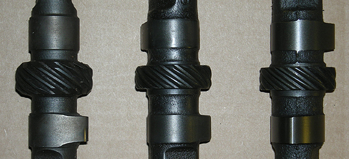

This article covers distributor gear failures which occur in Ford small (144-170-200-250ci) inline six applications with aftermarket, hydraulic or solid lifter, flat tappet camshafts. It does not cover roller cam gear failures, as they were never an option in the small six. If you intend to read the entire article, pull up a comfortable chair and get something to drink before you start. It's a long article.

When the Ford engineers designed the small inline six, which is commonly found in Falcons and Mustangs, the output was intended to
be in the 80 to 120 horsepower range and limited to 4500 RPM. However today's high performance inlines have gone well beyond those limits. To handle the additional stress
on engine components, engine builders utilize various machining and assembly techniques, as well as a wealth of aftermarket products designed for high performance applications. Parts like hardened rod bolts and connecting rods, forged pistons, main and head studs, moly pushrods, roller rockers, custom valves and springs, and so on. However, the distributor gear is quite often overlooked, that is until premature gear failures occur. Fortunately such failures are a rare occurrence (less than 1%), and can usually be rectified by identifying the underlying causes. Normally it is not limited to one cause, but rather a combination of issues. Such gear failures are common to all engine sizes and types, aftermarket camshafts, and/or ignition systems, regardless of the manufacturer.
The inline six utilizes a typical design where the distributor and oil pump (via a shaft) are driven by a gear on the camshaft. This gear type is called a "right-angle helical drive" and was used primarily for it's low cost and space saving design, rather than being the better design.
The gears are called "point-contact" which means there's very little tooth surface area transferring the power, hence the strain on the gear teeth is substantial. This coupled with the gear surfaces constantly sliding across the face of one another, inherent to the design, results in high friction and subsequent wear. As such, the distributor gear (also called the "sacrificial gear") is designed to wear out first, thus sparing the camshaft. It's much easier and cheaper to replace a distributor gear, rather than a camshaft & lifters.
Those who experience premature failures are quick to blame the camshaft, claiming poor quality and craftsmanship as the cause. However, considering the number of camshafts sold industry wide, the number of reported failures is minimal. One would expect a much higher failure rate if the billets were in fact, inferior in quality. Therefore
Classic Inlines decided to research the subject, not only to determine the cause of failures in our inlines, but how to prevent them. The following information is the result of our research over the past few weeks.
There are six major manufacturers in the USA which produce cam billets, as well as several smaller companies. Most, if not all, of the well-known cam grinders in the USA purchase their billets from these six manufacturers. Clay Smith Cams (cam grinder for Classic Inlines) only purchases CWC rated billets (higher nickel content for strength), which are ISO quality approved (within 2% of the OEM specifications). Once ground the shafts are parkerized for additional strength and durability, resulting in a camshaft that exceeds OEM specifications.
Figure 1 |
 |
Re-ground OEM Camshaft |
Other Manufacturer |
Clay Smith Cams |
There has been some concern expresses about the aftermarket camshafts having a narrower cam gear, wondering if this had anything to do with the failures. While the OEM camshafts did have wider gears (fig. 1), engineering studies showed reducing the thickness of the cam gear had no effect on durability or wear patterns as was previously thought back in the sixties when these motors were designed. The thickness of the gears is directly relational to one another, and to the gear diameters. If one looks at the design of the "point-contact" helical gears, and the wear patterns (fig. 2), it is evident that only a portion of the teeth actually make contact at any given point in time.
Figure 2 |
 |
 |
Stock Ford Camshaft |
Aftermarket Cam |
A misaligned gear shows a wear pattern off center, either to the right or left, higher or lower (when looking at the gear as in fig. 3). A perfect wear pattern is centered top to bottom, and while I'm not sure why, it may be slightly left of center. If the wear pattern is above or below the center, the camshaft is walking. If it is to the left or right of center, the distributor needs to be raised (via shims) or lowered, respectively. Lets take a look at a worn gear (figure 3). Note the wear is fairly uniform and consistent, yet slightly to the right. This indicates the gears are close to being properly aligned, however the distributor needs to be shimmed higher to shift the pattern to the the left, or towards the centerline. While this gear shows signs of wear, a severely worn gear would have a knife like edge which is razor sharp. The likely cause
of premature wear on this gear is the lack of lubricant, increased loads, and/or hardness. Or more than likely a combination of these issues.
NOTE: All references to the cam and gear centerlines, wear patterns,
and adjustments
are based on looking at the gear, as seen in figure 3a. |
Figure 3 |
|
|
|
a) Worn Gear |
b) Stock Gear |
Typical of the helical gear design, a worn distributor gear will show wear on all the teeth, rather than a few. It should also be noted that the gears don't just break. The teeth wear down gradually, eventually breaking off one or more as wear progresses. Occasionally a gear may break in half, but this usually doesn't happen until it shows signs of severe wear. Yet this is not to say it doesn't happen.
A common problem which may occur suddenly, is when the gear pin shears off. This has been reported numerous times and is usually caused by improper tolerances, heavy loads, excessive horsepower , lack of lubrication, and/or binding.
So what causes premature failure? In most cases its a
combinations of factors.
Such as high oil pressure
or viscosity,
lack of lubrication, improper break in
(or lack of), incorrect hardness, rough surface finish, increased loads, improper alignment or mesh, distributor end-play, and cam walk. All of these issues contribute to premature gear failure. To prevent re-occurring gear failures it is essential to determine the cause of the failure, before replacing the distributor gear and/or camshaft.
 High oil pressure or
viscosity - Since high volume oil pumps are not available for our small sixes, we won't go into the problems associated with them. However it should be noted that high volume pumps greatly increase the possibilities of premature failure, unless preventative measures are taken. High oil pressure or
viscosity - Since high volume oil pumps are not available for our small sixes, we won't go into the problems associated with them. However it should be noted that high volume pumps greatly increase the possibilities of premature failure, unless preventative measures are taken.
Heavy viscosity oils like 50W, put a real strain on the system, especially when it's cold. Thicker oil may seem like good insurance, but the increased gear load it generates is bad news and generally offsets any advantage. When using high viscosity oils in cold climates, do yourself and your motor a favor by warming it up to normal operating temperatures before driving.
The same can be said for high oil pressure. How much oil pressure a motor really needs is subject to opinion. The classic 10 psi per 1000 RPM rule is not set in stone. Some engine builders recommend synthetic oils as their stable viscosity and friction fighting properties may help reduce gear loads, making it worth the extra cost. Anything you can do to reduce the load on the gear is worth looking into.
Figure 4 |
 |
Oil relief hole in the #1 pedestal cap |
Lack of lubrication - Lubrication is critical in preventing gear wear. One might think that oil splash off the crankshaft and con-rods would deliver plenty of oil to the gears but this is not true, especially when a windage tray is used. Hence the small six has a secondary oiling system. The front (#1) pedestal of the rocker assembly (figure 4) utilizes a cap with a small oil relief hole, which bleeds off excessive oil pressure under high rpm's. However its primary function is to supply additional lubrication to the cam and distributor gears. The oil being emitted from the relief hole flows down into the lifter galley, to a passageway which is located between the 2nd and 3rd lifter bosses (fig 5). The passageway is located directly over the cam gear, thus supplying lubrication to the gears. Make sure the oil relief hole and passageway are not clogged with sludge or any other foreign material, and an adequate supply of oil is actually reaching the gears. If you suffer from gear wear, you may want to chamfer and deburr the opening in the passageway to assist oil flow.
When using the full roller rocker system sold by Classic Inlines, the pedestals are eliminated, as is the oil relief cap. In such cases, you must use adequate sized hollow pushrods to provide an ample amount of oil flow, making sure plenty of oil is draining into the lifter galley around the passageway. This is especially critical at low rpm's, when crankshaft splash and oil pressures are reduced and at a minimum.
Figure 5 |
|
Oil passageway, between the 2nd & 3rd lifter bosses. |
Improper break in - A distributor gear needs to be broke in, following exactly the same procedures as you would for a rebuilt motor (running the motor at 1500-2000 rpm for twenty minutes). During the distributor gear (or camshaft) break in period provide additional lubrication by coating the gears thoroughly with zinc or moly break-in lubricant. This should be applied to both the cam gear and the distributor gear prior to installation.
Some cam manufacturers recommend installing a new or reconditioned distributor gear whenever the camshaft is replaced. The reason for this is simple. The cam and distributor gear actually seat to one another during the break in period, similar to a cam lobe and lifter. Once this happens, the distributor gear may not seat properly to a new camshaft gear. It may also be beneficial to lap the gears prior to break in, as discussed later in this topic. Never use an old worn gear as this may cause premature failure in short order.
DO NOT use synthetic oils during the distributor gear break-in period. Subsequently, any suitable 30, 40, or multi-viscosity oil (i.e. 10W30) can be used. Always verify gear wear after a break-in period of several hours, looking for proper mesh, tooth alignment, and/or excessive wear. Many gear failures are due to improper (or lack of) distributor gear break in.
NOTE: With the formulation of today's oils having evolved to favor roller cam applications, getting a flat faced camshaft, lifters, and gears through their critical initial break-in period is becoming more of a challenge. To meet current requirements, most oils have severely reduced zinc content. This has elevated the stresses where rubbing forces occur, leading to potential cam lobe, lifter, and gear failures. We highly recommend using an additive with zinc dithiophosphate during the initial oil fill (this is in addition to the moly-based lube that should have been applied to the camshaft, lifters, and gears during assembly). One such additive is Crane Super Lube (PN 99003-1), which was developed over 35 years ago. An 8 oz. container will provide the necessary additives to drastically reduce the potential for premature wear during the break in period. Some oil companies offer racing oils that have decent zinc content, however they may not be street legal. After break-in, change the oil and filter at normal intervals, as suggested by the manufacturer.
For engine break-in, we recommend Brad Penn Grade 1® High Performance Motor Oil, which has high levels of zinc (1500 PPM) for increased protection during this critical time.
For more information, and/or specifications, please read our tech article. You can also purchase Brad Penn High Performance Break-In or Multi-Viscosity Oil from Classic Inlines.
Below are three other motor oils with increased levels of wear preventive additives,
which
are also recommended for flat tappet cam and distributor gear break-in.
Delo 400 |
Delvac |
Rotella T |
Viscosity @100°= 15.95 |
Viscosity @100°= 15.50 |
Viscosity @100°= 15.12 |
Magnesium: 23 |
Magnesium: 419 |
Magnesium: 20 |
Calcium: 3343 |
Calcium: 2195 |
Calcium: 3322 |
Zinc: 1376 |
Zinc: 1231 |
Zinc: 1499 |
Phosphorus: 0 |
Phosphorus: 1120 |
Phosphorus: 1326 |
Moly: 0 |
Moly: 35 |
Moly: 0 |
Boron: 0 |
Boron: 61 |
Boron: 0 |
|
Incorrect hardness - Distributor gears are designed to be sacrificial. It's much easier to replace the distributor gear rather than the camshaft, so they’re engineered to go first in the event of failure. Properly chosen, your distributor gear and cam gear will differ in hardness, with the distributor gear being slightly softer. Do not install a hardened dizzy gear as a simple quick fix. You must verify the hardness of both gears, assuring the distributor gear is softer than the cam gear. Failure do to so may result in camshaft gear failure, requiring replacement of the cam and lifters, as well as the distributor gear. Never re-use a damaged or old worn gear.
Many aftermarket distributor gears are made by compacting and sintering a predominantly iron powder mixture containing additions of carbon, copper and nickel boride. While these gears are offered under several brand names, and are reported to improve wear resistance, Classic Inlines prefers to use reconditioned and Parkerized OEM distributor gears. We are using reconditioned gears as new OEM distributor gears are no longer available. However we are currently testing various name brand distributor gears for their Rockwell hardness. Once we locate a gear with the correct hardness and a quality surface finish, we will have the gears Parkerized for corrosion resistance, improved oil retention, and increased surface hardness.
When we have concluded testing the various gears for Rockwell hardness, we will post the results in this article. In the mean time, Classic Inlines would be happy to Parkerize your OEM gear, providing the gear is in good condition, and you purchased a camshaft or distributor from Classic Inlines within the past calendar year. Return shipping is extra. Please allow six to eight weeks.
NOTE: Parkerizing is an electrochemical process used to protect metal from corrosion, increase wear resistance, and improve oil retention. Electrochemical conversion coatings become part of the metal surface to which they are applied, unlike painted coatings. Parkerizing hardens the gear tooth surface, while keeping the inner core of the gear soft, which reduces the possibility of gear breakage or shattering. The process involves submerging the gear into a phosphoric acid solution heated to a temperature of 190-210 °F. The key ingredient is zinc or manganese, with varying amounts of nitrates, chlorates, and copper. A stream of small bubbles is emitted from the metal as the process takes place; when the bubbling stops, the process is complete. The finish can be painted or coated for additional protection. |
Rough surface finish - The finish on the gear is important because little ridges on the tooth face (contact surface) will act like cutters. If you inspect a few gears and cams, you quickly see that the surface quality will range from pretty smooth to real rough, depending on the manufacturer. Lapping the gear tooth face smooth is best if done before hardening the camshaft or distributor gears. However, the lapping process can be done during a trial assembly, by using a fine lapping compound rotated onto the gear teeth. High spots and rough surfaces will quickly appear and can be lapped-out of both gears, giving you a nice smooth finish. However, you must use caution to prevent damage to the surface hardness.
Increased loads - Several factors contribute to increased loads on the distributor gear, which include high volume oil pumps, high viscosity oils, misaligned or faulty oil pumps (relief valves), improper oil pump drive shaft lengths, and high engine rpm's. We've covered high volume oil pumps and high viscosity oils, so lets take a look at oil pump issues, and high engine rpm's.
Stock Ford hex oil pump drive shafts are known to vary in length, which could cause the shaft to bottoming out. The oil pump shaft also needs to be aligned properly, so the distributor turns freely before tightening the mounting bolts. Failure to check either condition during engine assembly may cause a binding situation, thus damaging the gear.
The oil pump pressure relief valve handles excessive oil pressure, assuming it is operating properly, and normally keeps the oil pressure around 50-60 lbs. High volume pumps normally maintain oil pressure around 75lbs. Improper spring rates or faulty relief valves, which fail to open fully or stick in a closed position, can result in extreme oil pressures at high engine rpm's. As the oil pressure increase, so does the strain and subsequent wear on the distributor gear. A valve stuck in an open position deceases oil pressure at low rpm's, but increases with rpm's.
As stated earlier, the power output of the inline six was designed to peak around 4500rpm, however today's performance inlines commonly see 6000rpm or higher. High engine rpm's generate extreme friction and stress on the distributor gear teeth. As the rpm's increase, the strain on the distributor gear teeth accelerates at a much greater rate, which can easily result in premature gear failure if precautions are not observed.
Improper alignment or mesh - Premature gear wear can be caused by the distributor being "bottomed" out. The best method for checking this is to install the distributor the in the engine without a gasket. After removing the cap and rotor, firmly hold the distributor against the block with one hand and pull on the top plate of the main shaft with the other hand. Make sure you grab the top plate (where the weights and center cam are riding), not the reluctor (the part the rotor attaches to). The reluctor is designed to have up and down movement at all times. By grabbing the top plate, you are checking for any up and down play in the shaft.
If the shaft has a slight up and down movement, you are ready to install the distributor. Make sure to use a gasket as it will prevent oil leaks and will add a tad bit of additional clearance. If there is no up and down movement in the shaft, then the distributor is bottomed out. If this is the case, you'll need to add a nylon distributor shim of the correct thickness, until up and down end-play is achieved. Do not stack gaskets as they eventually compress, reducing clearance.
As mentioned previously, lapping can be done on the cam during a trial assembly by using a fine lapping compound, rotated onto the gear teeth. A visible contact pattern will appear, which should be centered on the gear teeth. Adjust this pattern if needed by moving the distributor gear’s position. This is accomplished by adding or removing a distributor shims.
Another method of checking for bottoming, is applying machinists dye to the distributor gear. Spin the engine several rotations by hand, then remove the distributor and inspect the wear pattern. You should have an even pattern through the middle of the gear. If the wear pattern is above or below center, add or remove distributor shims until the correct pattern is obtained. If the wear pattern is fore or aft of center, verify camshaft end-float, and replace the camshaft thrust plate if required. Clean both gears completely when the lapping operation is finished and use assembly lube on the gear teeth upon final installation.
When the gears do not properly mesh, there is heavy load on a small contact point, which may cause premature gear failure.
NOTE: All references to the cam and gear centerlines, wear patterns,
and adjustments
are based on looking at the gear, as in figure 3a above. |
Distributor shaft end-play - Distributor shaft end-play is commonly overlooked when a motor is being assembled, or when installing a new/upgraded distributor. Most professional engine builders stresses checking the distributor-shaft end-play. Clearances which are too tight or too loose, may result in camshaft and distributor gear failures. Distributor shaft end-play should be between .022 to .033 of an inch. The factory service manual also states the gear location to be 2.510-2.515' from the mounting flange.
Cam walk & end-play - Right-angle helical gears create cam thrust, also known as cam walk, which results in the camshaft moving forward. This results in the "point-contact" being moved off center, increasing gear wear. Some builders add a positive cam stop or “button” to the timing chain cover to prevent the cam from moving forward. However this is not practical in many applications. Another means of prevention includes the use of a thrust washer, or thrust plate as in inline applications, to prevent forward cam walk. A worn thrust plate results in excessive end-float, thus allowing cam walk and increase gear wear. Camshaft end-float should be between .001 to .006 of an inch.
Figure 6 |
|
|
Camshaft Centerline |
Distributor Centerline |
The first photo (fig.6) shows the cam centerline, which can't be changed. However the dizzy can be raised or lowered to change wear patterns by installing or removing shims, or changing the gear location on the shaft, which is harder to do and requires re-drilling the pin set. The next photo shows the dizzy centerline, which can't be changed. However it shows how cam walk results in moving the gear off the centerline. This is prevented by the camshaft thrust plate. Considering most of our motors have a lot of miles on them, the plate may have a lot of wear too. The only fix is to replace the plate, or use shims. However I have never heard of shims being used, so I don't know if this is a viable option? The only thrust plates that are available are used, so it might be the only option, or maybe installing a button?
Summary - The major factors that put load on the gear are: oil pressure, oil viscosity, and RPM. Since we need RPM to make horsepower, we need to look at the other factors to reduce and/or prevent premature gear failures.
Anything that reduces gear tooth contact friction is beneficial, such as proper gear alignment, better gear finishes, proper maintenance, improved lubrication, regular and frequent oil & filter changes, using the manufacturer's recommended oil viscosity, and the use of wear resistant additives and/or improved motor oils.
IMPORTANT: Severe engine damage may result from premature gear failure! |
On most engines the gear is easily inspected by pulling the distributor. It would be beneficial to pull the distributor and inspect the gears periodically. Note that it is possible to visually check cam gear wear by pulling the distributor and inspecting the cam’s gear teeth, which can be seen through the distributor’s mounting hole with a bright light.
Other means of preventing premature failures include: improving the tooth surface finish, using the proper gear hardness, verifying gear alignment and mesh, as well as verifying and adjusting distributor and camshaft end-play during engine assembly.
Never re-use a damaged or worn distributor gears. Always lube the distributor and cam gear with break-in lubricant prior to installing a new camshaft or distributor, and follow the proper break-in procedures. Classic Inlines recommends using a Parkerized, reconditioned, or a new OEM distributor gear whenever possible. Failure to adhere to these rules may result in premature gear failure and severe internal engine damage. |
Below are pictures of two A/C Delco cast gears and an aftermarket hardened gear (right) which have been parkerized. The A/C Delco gears have a hardness of 32C. The hardened gear tested at 47C on the Rockwell scale.
Here's an article published by Hot Rod magazine several years ago, but the information is useful when installing a new or reconditioned distributor.
Sources: Clay Smith Cams, Comp Cams, Crane Cams, Isky Cams, Performance Distributor, Mallory Performance, MSD, Rush Gears, Carcraft, Slant Six, Hot Rod Magazine, and Ford Racing.
Written By: |
AzCoupe - Fordsix forum admin and owner of Classic Inlines
|
  
|